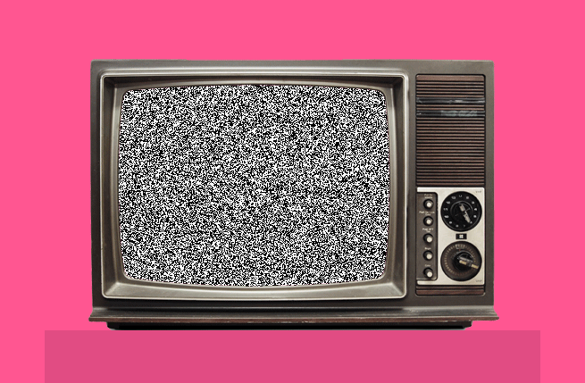

Antecendentes de la Televisión
Los antecedentes de la televisión se basan en una serie de descubrimientos y desarrollos tecnológicos que eventualmente llevaron a la invención y evolución de este medio audiovisual. Aquí están algunos de los hitos más importantes:

Disfruta de la música mientras exploras este contenido.
Fenómeno de la electricidad y el magnetismo:
A medida que se entendía mejor la electricidad y el magnetismo en el siglo XIX, los científicos comenzaron a explorar cómo estos fenómenos podrían utilizarse para transmitir imágenes y sonidos a distancia.Nipkow Disco:
En 1884, el inventor alemán Paul Nipkow patentó el "disco de Nipkow", un dispositivo mecánico que consistía en un disco giratorio perforado con una serie de agujeros dispuestos en una espiral. Cuando el disco giraba frente a una fuente de luz y una lente, permitía escanear imágenes y transmitirlas a través de cables.Transmisión de Imágenes:
A finales del siglo XIX y principios del XX, varios inventores, como John Logie Baird en el Reino Unido y Charles Francis Jenkins en Estados Unidos, realizaron experimentos con sistemas de televisión mecánica. Utilizando tecnologías como el disco de Nipkow, lograron transmitir imágenes en movimiento de forma rudimentaria.Televisión electrónica:
A medida que avanzaba el siglo XX, se desarrollaron sistemas de televisión electrónica que utilizaban tubos de rayos catódicos (CRT) para generar y mostrar imágenes. Vladimir Zworykin y Philo Farnsworth fueron dos de los principales contribuyentes en este campo. Farnsworth es especialmente conocido por su trabajo en la invención de la cámara de televisión y el sistema de escaneo electrónico.Primera transmisión pública:
En 1927, Philo Farnsworth logró transmitir una imagen electrónica en movimiento a través de su sistema de televisión. En 1930, transmitió la primera imagen electrónica reconocible de una persona.Desarrollo de estándares:
Durante la década de 1930, se establecieron normas técnicas y estándares para la televisión, lo que permitió la producción y la transmisión a gran escala de programas.Expansión de la televisión:
La década de 1940 vio el inicio de la televisión comercial con la producción y transmisión de programas regulares. La Segunda Guerra Mundial retrasó en parte el crecimiento de la televisión, pero después del conflicto, el medio se expandió rápidamente.Introducción del color:
La transición de la televisión en blanco y negro a la televisión en color ocurrió en las décadas de 1950 y 1960, mejorando significativamente la calidad visual de los programas.Cable y satélites:
A partir de la década de 1960, se desarrollaron sistemas de cable y transmisión vía satélite, lo que permitió la distribución de señales de televisión a nivel nacional e internacional.Estos antecedentes sentaron las bases para el desarrollo y la expansión de la televisión como uno de los medios más influyentes en la sociedad moderna, que ofrece entretenimiento, información y educación a audiencias en todo el mundo.